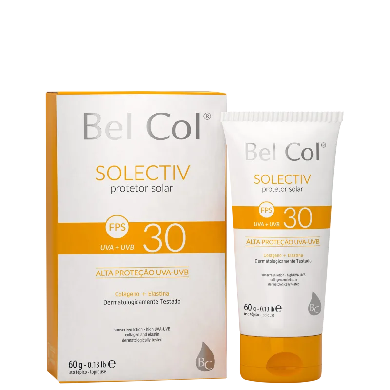
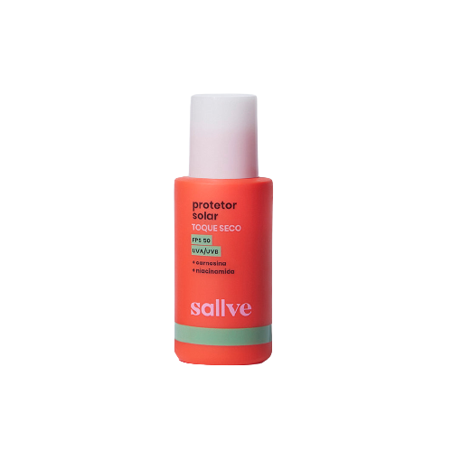

Como a pele reage ao sol
Desvendando o protetor solar
As pessoas de pele negra retinta, olhos e cabelos escuros geralmente possuem esse fototipo. Devido à alta quantidade de melanina na pele, tem menor risco de queimaduras na pele e alcançam um bronze rapidamente, esse tipo de pele tem uma proteção natural muito grande, porém é importante o uso do protetor solar com um fator mínimo 15 para diminuir o risco de um câncer de pele.

